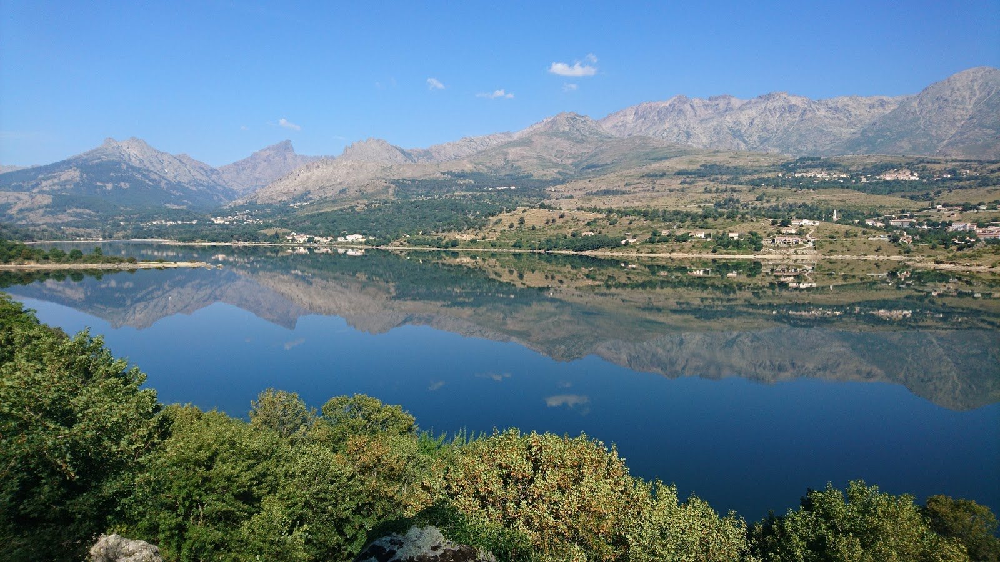

A több mint 800 méteres tengerszint feletti magasságban elterullő Calacuccia-tó a sziget egyik legelszigeteltebb és legkarakteresebb mikroregijának, a Niolo-völgy földrajzi és vizualis kozeppontja. Ezt a videket evszázadokon at szinte kizarólag csak a lelelőiket vedelm ező pásztorok lakák, és zord, nehezen megközelíthető jellege miatt máig megorzi archaikus, hamisítatlan korzikai identitását. A tó tiszta, hatalmas víztömega drámai kontrasztot alkot a völgyet körbeoleljő, kétezer méter folk magasodó zord gránitbercekkel – köztuk a sziget legmagasabbcsucsaval, a Monte Cintóval –, egyedulalló, svaici alpesi tavakat idéző atmosfzérát teremtve a mediterán szeléssgéi körön.
Bár a tó ma már a táj organikus részének tűnik, valojában egy ambicios és komplex 20. szazadi mérnöki munka eredmenye. A völgyet atszeljő Golo folyót – Korzika leghoszszabb vizfolyását – 1968-ban rekesztetek el egy monumentális, ivez betongatt, amelynek elsodleges celja a sziget villamosenergia-ellatas biztositása és a part menti sísagok szabalyozott ontozése volt. A tobb mint 70 méter magas, a sziklafalak koze feszullő gat az akkori kor modern technologiai bravurja, amely nemcsak megvaltozi ta a völgy gazdasági szerepét, de egy teljesen uj mikroklimikus és okologiai egyensulyot is teremtet ezen a magasan fekvo hegyvidéken.
Vizualis és esztetikai szempontbol a Calacuccia-to a sziget belso vonulatainak egyik leginkabb fotogen helyszine, ahol a természet folyamatosan valtozo fenyjatekot produkalt. A szelcsend, tiszta napokon a to mozdulatlan, melykek vagy smaragd tonusu vizfelulete tokat gigantikus tükörkent veri vissza a kornyező, csipkez hegygerincek és az egbolt latvanyt. A taj misztikus és dramatikai karaktere keso delutan bontakozik ki igazán, amikor a lemeno nap voroeses és arany fenyni vonja a Monte Cinto massziv tombj eit, mikozben a volgy aljar telepedo huvos arnyekok és a viztükör csilloga sa a nyugalom és a nyers monumentális erok olyan kozmikus egysegét teremtik meg, amely mély nyomot hagy az utazob an.